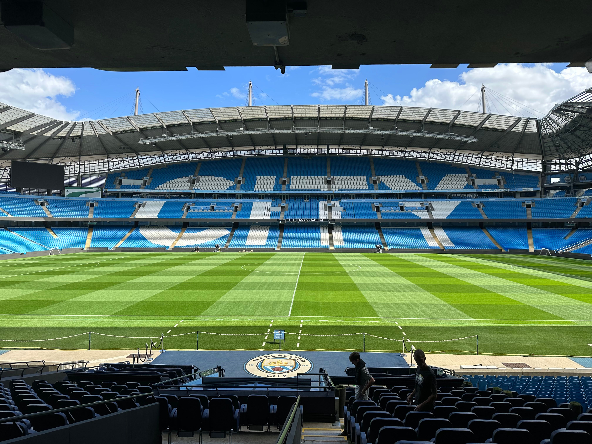
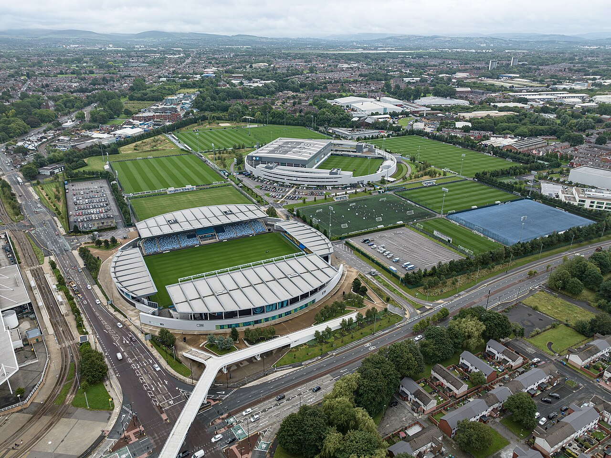

Conocidos como Citizens o Sky Blues, sus aficionados combinan una leal base local de clase trabajadora fiel incluso en las épocas de menor éxito del club con una audiencia global en constante crecimiento. En el estadio destacan colectivos como el 1894 Group en la Grada Sur para alentar, además de costumbres icónicas como cantar el himno "Blue Moon" y celebrar los goles bailando The Poznan de espaldas al campo.

El Estadio Etihad Stadium
04-04-2026
Construido originalmente para los Juegos de la Mancomunidad de 2002 e inaugurado para el fútbol en 2003, el feudo del Manchester City es un recinto de categoría elite. Cuenta con capacidad para más de 53,000 espectadores con proyectos en marcha para superarla y destaca por su arquitectura ovalada con rampas en espiral y un terreno de juego con tecnología de césped híbrido.

Centro de Alto Rendimiento City Football Academy
11-05-2024
Situado a pocos pasos del estadio e interconectado por un puente peatonal, el Etihad Campus alberga una de las instalaciones de entrenamiento más avanzadas del mundo. Con más de 16 campos de fútbol con césped adaptado a distintas condiciones de la Premier League, residencia de lujo, áreas médicas de última generación y un estadio propio para el equipo femenino y las categorías inferiores Joie Stadium, es el núcleo del éxito futbolístico e institucional del club.